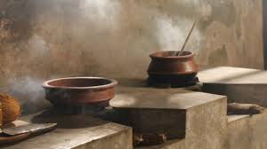
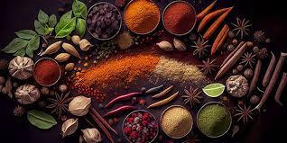

South India's Rich Traditions and Food Culture
South Indian cuisine features diverse flavors and traditions from each region, celebrated at Veduka South Indian Cuisine with authentic dishes that honor this rich culinary heritage.
Read More

Traditional Cooking Methods of South India
South Indian cuisine features traditional methods like stone grinding, clay pot cooking, and fermentation, emphasizing fresh, local ingredients and aromatic spices for flavorful, nutritious dishes.
Read More

Cultural Significance of South Indian Spice Blends
South Indian spice blends such as sambar and rasam powders combine traditional spices for unique flavors and health benefits, reflecting the region's rich culinary heritage and enduring customs.
Read More